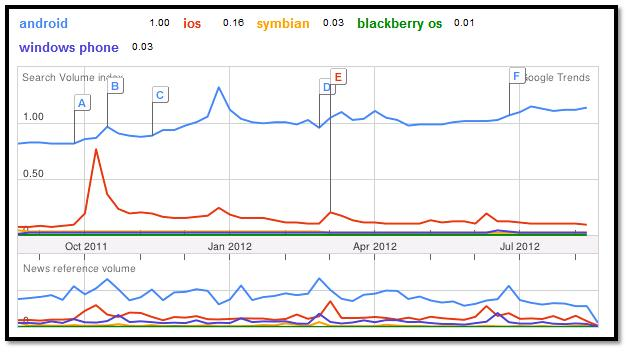
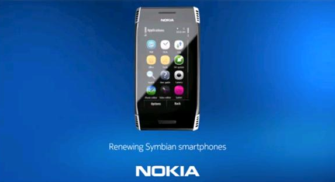
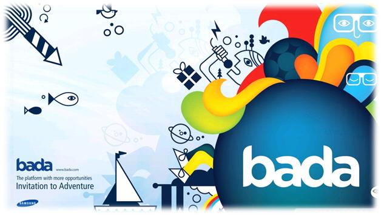
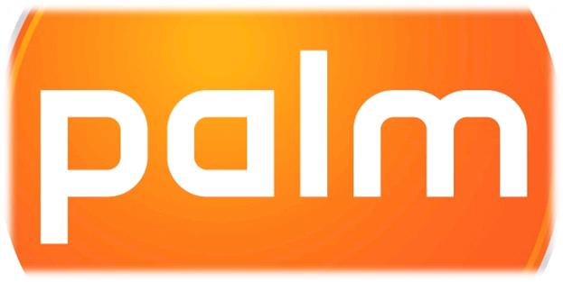
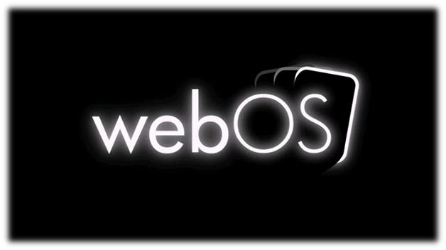
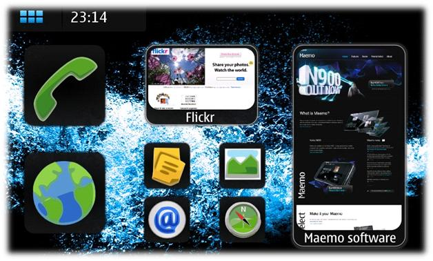

Операционные системы мобильных телефонов
Многие люди имеют достаточные знания о различных мобильных телефонов и их компаний, но очень немногие из них знают что-то об операционных системах. Очень важно знать о разных мобильных ОС которые используют производители, и что прячется за красочный сенсором вашего смартфона.

На рисунке выше график популярности за последние 12 месяцев. Очевидно, что Android бьет по популярности все другие операционные системы, даже IOS и Symbian, которые когда-то были лидерами отрасли. Наблюдаем, что IOS может продолжать конкурировать с Android. В связи с выпуском Windows Phone 8 мы можем увидеть некоторую здоровую конкуренцию в будущем.
Сравнение остальных мобильных операционных систем
Symbian
OS Symbian официально является собственностью Nokia. Это означает, что любая другая компания должна будет получить разрешение от Nokia перед использованием этой операционной системы. Nokia по-прежнему является гигантом в недорогом сегменте рынка мобильных телефонов, поэтому Java Symbian была наиболее часто используема в мобильных телефонах пару лет назад. Тем не менее Symbian широко используется в бюджетных аппаратах , но спрос на них постоянно снижается. Обновление мобильной OS Symbian сделала его способным работать эффективно на смартфонах.
Symbian Anna и BELLE два последних обновления, которые в настоящее время используются в смартфонах Nokia. В целом, Symbian OS отлично спроектирован и очень удобен. К сожалению, Symbian OS становиться не востребованной в настоящее время из-за огромной популярности Android и IOS. Некоторые телефоны в настоящее время работающие на Symbian OS это Nokia C6-01, Nokia 603, Nokia 700, Nokia 808, Nokia E6 (ANNA) и Nokia 701 (Belle). Также Symbian является популярным выбором среди Nokia Dual SIM мобильных телефонов.

Blackberry OS
Blackberry OS является собственностью компании RIM (Research In Motion) и впервые была выпущен в 1999 году. RIM разработала эту операционную систему для своей Blackberry линии смартфонов. Blackberry сильно отличается от других операционных систем. Стильный интерфейс, а также оригинальный дизайн телефона и клавиатура QWERTY.
Как и у Apple, Blackberry OS не доступна для любых других производителей. В настоящее время последней версией этой операционной системы Blackberry OS 7,1 которая была введена в мае 2011 года и используется в Blackberry Bold 9930 . Это очень надежная ОС и имеет иммунитет к почти всем вирусам. Некоторые из смартфонов работающих на Blackberry OS: Blackberry Bold, BlackBerry Curve, Blackberry Torch и Blackberry 8520.

BADA
Как и другие Samsung также владеет операционной системой, которая известна как BADA.Bada является удобной и эффективной операционной системой, так же, как Android, но к сожалению, Samsung не использует OS Bada в больших масштабах по неизвестным причинам. Последней версия Bada 2.0.5 была выпущена 15 марта 2012 года. Есть только 3 телефонов, которые работают на Bada. Это три смартфона Samsung Wave, Samsung Wave 2 и Samsung Wave 3. Я считаю, что OS Bada добилась бы большего успеха, если бы Samsung способствовал ее развитию.

Palm OS (Garnet OS)
Palm OS была разработана Palm Inc в 1996 году специально для карманных компьютеров (Personal Digital). Palm OS была в основном предназначена для работы на сенсорном интерфейсе. Несколько лет спустя он был использован в некоторых смартфонах. К сожалению, он не смог закрепится на рынке, и в настоящее время не используется. Пять с половиной лет назад мы видели последнее обновление Palm OS в 2007 году.Palm OS была использована многими компаниями, включая Lenovo, Legend Group, Janam, Kyocera и IBM.

Open WebOS
WebOS также известна как WebOS Hp или просто WebOS которая в основном была разработана Palm Inc, но через несколько лет она стала собственностью Hewlett Packard. WebOS был запущен в 2009 году и был использован в нескольких смартфонах и планшетах. Hp способствовало развитию WebOS на высоком уровне, используя его в смартфонах и планшетах. Последний прибор, работающий на WebOS был Pad Hp Touch. С появлением Android на рынке продажи WebOS Hp сильно уменьшились. Наконец НР объявила о прекращении производства устройств на базе WebOS, но пользователи уверены, что они будут получать регулярные обновления операционной системы.

Palm OS (Garnet OS)
Palm OS была разработана Palm Inc в 1996 году специально для карманных компьютеров (Personal Digital). Palm OS была в основном предназначена для работы на сенсорном интерфейсе. Несколько лет спустя он был использован в некоторых смартфонах. К сожалению, он не смог закрепится на рынке, и в настоящее время не используется. Пять с половиной лет назад мы видели последнее обновление Palm OS в 2007 году.Palm OS была использована многими компаниями, включая Lenovo, Legend Group, Janam, Kyocera и IBM.
Maemo
Nokia и Maemo Community объединились, чтобы произвести операционную систему для смартфонов и интернет-планшетов, известную как Maemo. Как и у Android сегодняшний рабочий стол разделен на несколько секций, которые показывают Поиск в Интернет-баре, различные ярлыки, RSS Feed и другие подобные вещи. Позже, в 2010 году на MWC (Mobile World Congress) было объявлено, что в настоящее время Maemo проект будет объединен с Mobilin для создания новой операционной системы известной как MeeGo.

MeeGo
MeeGo была в основном разработана на мобильную платформу, но на самом деле использовалась для работы многих электронных устройств, включая карманные компьютеры, автомобильные устройства, телевизоры и нетбуки. В 2010 Moorestown Tablet PC представил на выставке Computex Taipei Nokia N9.